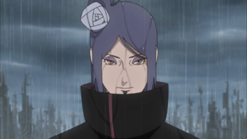

- Jaiotze-data :
- 1986ko otsailaren 20an
- Sexua:
- Emakumea
- Adina:
- 35urte
- Altuera:
- 1,69m
- Pisua:
- 45,3kg
- Herria:
- Aldea oculta de la lluvia
- Herrialdea:
- Pais de la lluvia
- Posizioa:
- Rango S
- Habilitatea:
- Ninjutsu de papel, Bala de fuego, Ola violenta de burbujas...
- Gauza interesgarriak:
-
Akatsuki taldeko emakumezko kide bakarra da
- Historia:
- Haurrak zirenean, Konan eta Yahiko umezurtz geratu ziren euriaren Alde Ezkutuko gerra ugarietako baten ondorioz, beraiek babestera behartuz. Beranduago, Konanek Nagato hilzorian zegoela aurkitu zuen, gosearen ondorioz, eta honek Yahiko4rekin eraman zuen, eta, ondoren, hirurek Sanninak aurkitu zituzten, janaria eman zietenak. Konanek txundituta utzi zituen, janariaren estalkien lore perfektua eginez. Nagatok, Arroken Alde Ezkutuko ninja bat hil ondoren, Jiraiyak, haurren eskaera onartzea erabaki zuen, eta ninjutsua irakasten hasi zen. Beranduago, Hanzouk Yahiko, Nagato eta Konanekin tratu faltsu bat eskaini zuen, hauek onartu zutena, baina, hurrengo egunean, Konan bahitu zuten Danzok eta Hanzouk, eta, sari bezala, Yahikoren heriotza eskatu zuten Konan askatzeko. Hau ikustean, Yahiko Nagatoren aurka oldartzen da, honek hil dezan, honela, Konan eta Nagatok, bere laguna galtzea jasan zuten.6